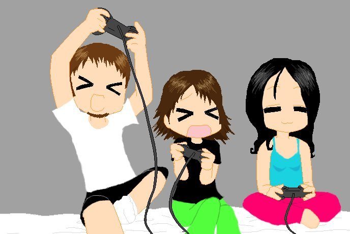

My first experience playing video games was at a local arcade in South Philly back in the early 80's. I played the classics, like Donkey Kong, Pac-Man, Centipede, Space Invaders, Frogger, Ms. Pac-Man, Asteroids, etc.
Soon after, we got an Atari 2600. I played Pole Position, Pitfall!, Joust, E.T. The Extra Terrestrial, and more. Then came the Atari 5200 and Intellivision. Then, Nintendo and Sega Genesis. Eventually, Playstation.

After that, life changed and I found myself having to get a job and live on my own.
Eventually I got married, bought a house, and had kids. I purchased an Xbox 360, then a Wii U and a PS4 and had fun playing with my kids.
I started watching YouTube videos, and I noticed people uploading videos of them playing video games. Not only that, but they were showing tips and tricks to help people beat the games.
This gave me the idea of doing the same thing. I ended up getting a laptop and some other equipment, like an Elgato capture card to record the gameplay from the consoles, and a video camera and microphone.
My first attempts at recording and editing the videos went fairly well, but I maid the mistake of leaving in copyrighted music and cutscenes. So, some of my videos were getting copyright warnings.
I learned how to get better by experimenting with a few different channels. As time went on, I took a break from it because life happened again.
Eventually, I got inspired again and I created Joel Jumps on February 20, 2022 😃
I didn't actually start uploading videos until later that year - around September or October 2022.

I wanted my gaming channel to be family friendly, so I decided to focus mostly on playing non-violent platformer games like Sonic. I also play Roblox "Find The..." style games, as well as indie games like Planet of Lana.
Here are 6 how-to videos from my channel below. Feel free to checkout the channel and see what you think! And, if you like it, feel free to subscribe! I appreciate the support! You can check out the Channel here!